Herramientasa de un BARTENDER
El arte de la coctelería no depende únicamente de la creatividad o del conocimiento de las recetas, sino también del uso correcto de las herramientas. Cada elemento de la barra cumple una función específica: medir, agitar, colar, mezclar o servir. Contar con las herramientas adecuadas no solo facilita el trabajo, sino que también garantiza precisión, higiene y una mejor presentación de las bebidas. Para un bartender, dominar sus instrumentos es tan importante como conocer los sabores, ya que cada cóctel exige una técnica distinta y una ejecución prolija. Un servicio profesional comienza en la elección de la cristalería, continúa en la manipulación de las herramientas y se completa en la experiencia final del cliente. A continuación se detallan las principales herramientas que todo bartender debe conocer y utilizar:
Cockteleras
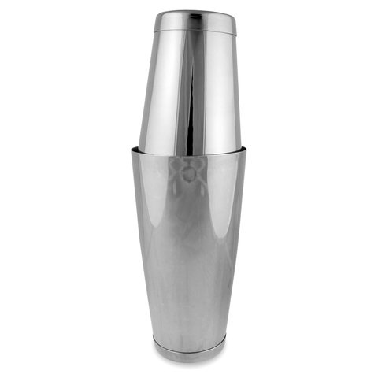
Colador Oruga
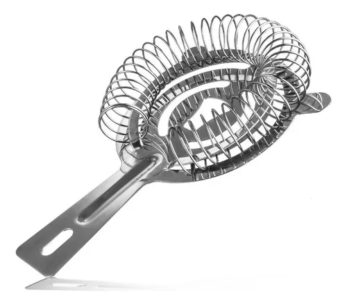
Cucharilla
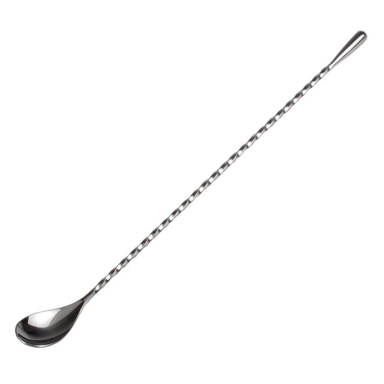
Destapador
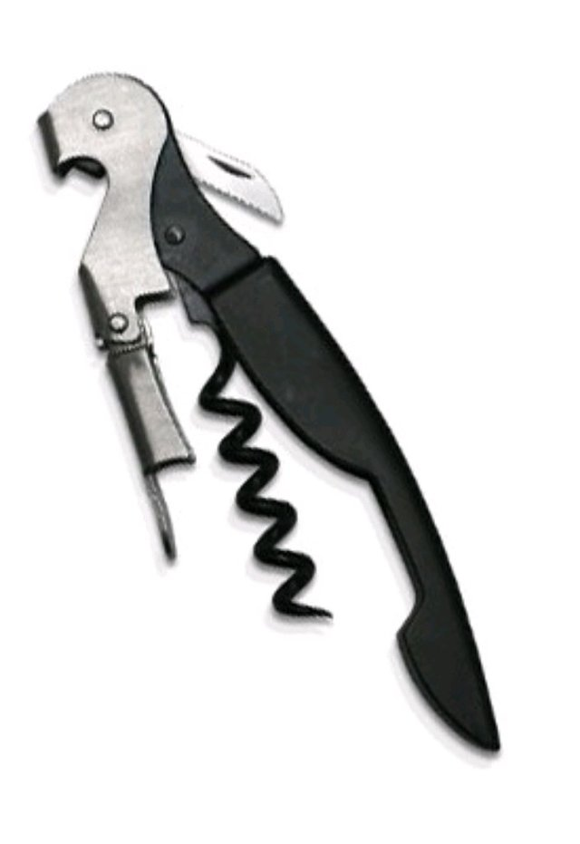
Espada para Espuma
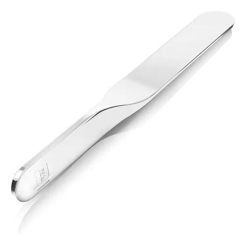
Exprimidor de Limas
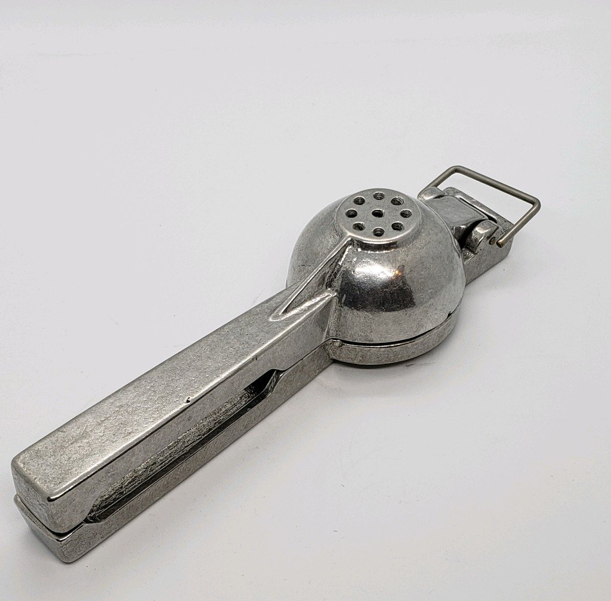
Jiggers
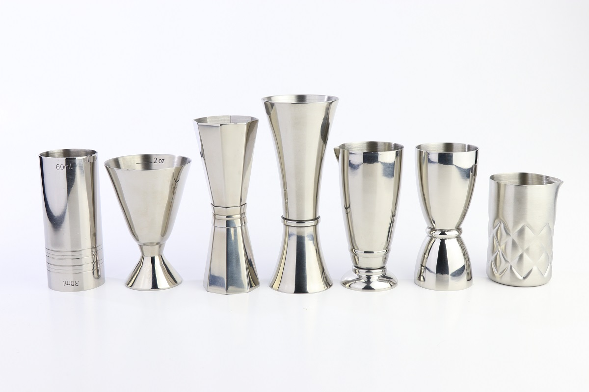
Pala para Hielo
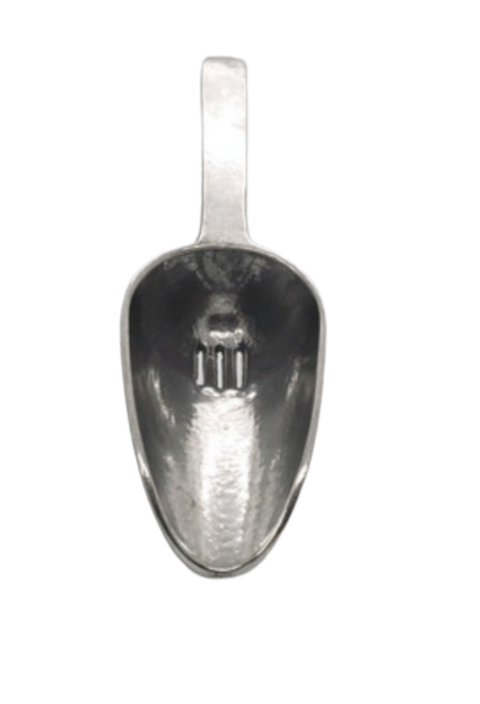
Pica Hielos
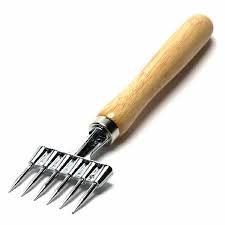
Pinza Quirurgica
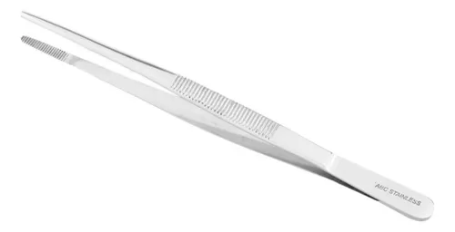
Vaso Mezclador
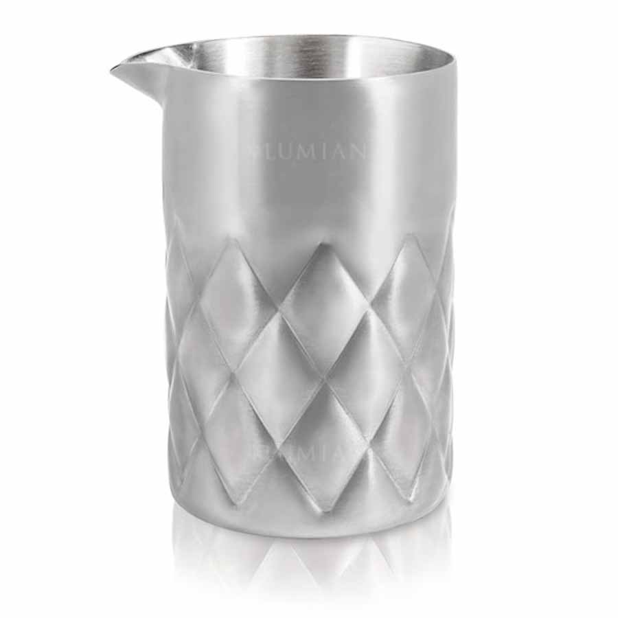